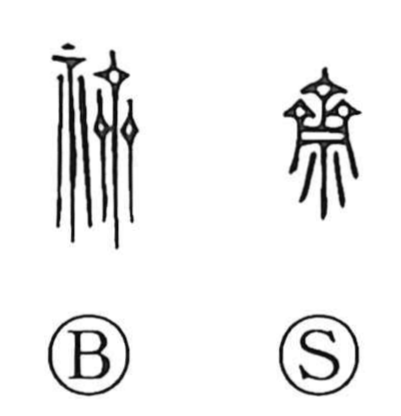

斎

Uncategorized
Kun: imu, itsuku | On: sai
purification ・ abstinence ・ to fast ・ to abstain ・ taboo
Explanation
Originally written as 齋, the character combines an abbreviated 齊 with 示. 齊 depicts the ceremonial coiffure of a woman serving the deities, shown by three hairpins set side by side, while 示 represents the altar table used in rites. Together they evoke conducting worship before the altar at a festival. From this ritual scene, 斎 came to mean sacred abstinence—refraining from certain foods or activities for a set period—and the careful self-restraint that purifies body and mind.